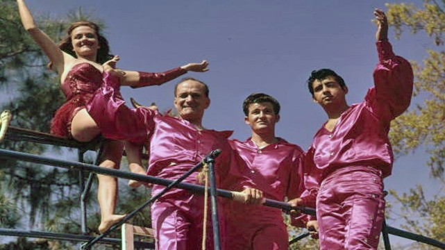
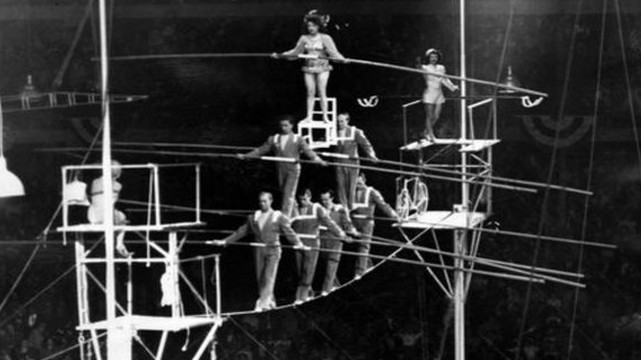
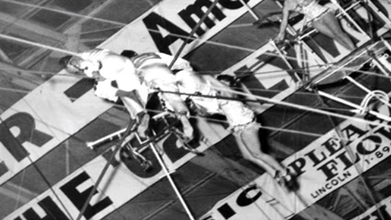
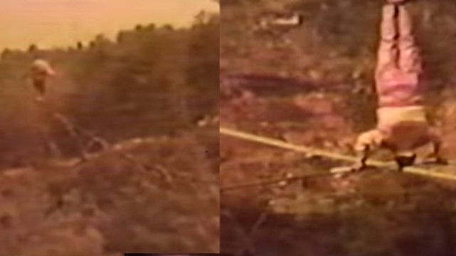
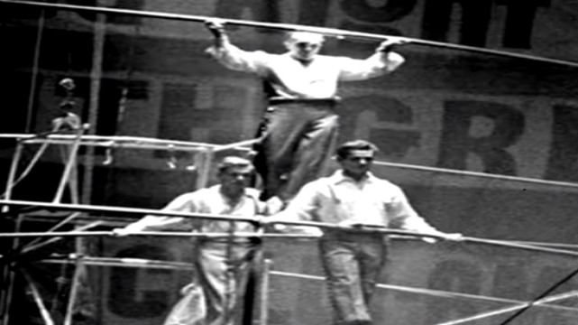
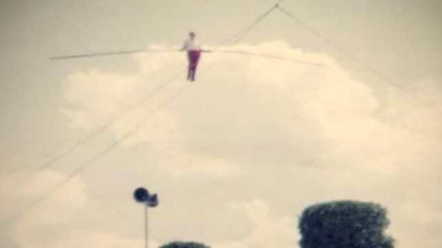

Karl Wallenda - Time Line
"To be on the wire is life. the rest is waiting"
1905

Personal life
Wallenda was born in 1905 in Magdeburg, Germany to a family circus performers. He began performing with his family at age six.
and soon he was a performer
1922

The Flying Wallends
Wallenda put together his own high wire act which would come known as a "The Flying Wallendas".
Through out the year's The Flying Wallenda's would consist a various friends and family of Karl Wallenda who developed many empresive stats for the group.
1947

7-Man Pyramid.
In 1947 The Greate Wallendas developed the unequaled "7-Man Pyramid"
a death defying high wire act that often close their performances.
1962

1st incidents
In 1962 while performing with the Flying Wallenda's Karl was involved with an accidents, when the groups signature the 7-Man Pyramid collapsed, his nephew and son in law both fell to their death and his adopted son left paralyzed from the ways down. Karl survived and manage to save his knees.
1970

SkyWalk
On July 18, 1970 Karl Wallenda performed a high-wire walk known as a "SkyWalk", across the Tallulah Gorge in front of 30,000 people in Georgia in 1970.
The 65-year-old Wallenda performed tricks during the crossing such as Head Stance.
1972

2nd Tncidents
In 1972 while walking accross the wire Karl witnessed of a death of another son in law, Richard Guzman climbing up to partake in the act when he accidently touch live electrical wire and plummeted to his death.
1974

Brake the Record
In 1974, at 69 years old Wallenda broke the world skywalk distance record of 1,800 feet (550 m) at Kings Island, a record that stood until July 4, 2008, when his great-grandson, Nik Wallenda, completed a 2,000-foot skywalk (610 m) at the same location.
1978
The Last Performance
In 1978 Wallenda was 73 year-old he had a circus act with his grand daughter in San Juan, Puerta Rico, Karl would performed a free show a high wire walk between the two towers of the ten-story Condado Plaza Hotel distances 750 ft and 10 stories up in the air.
Wallenda step on the wire as he has done countless time before and begins walk accross it, The hotel was near at the ocean and this is a windy location to maintain Wallenda ballance when Karl Wallenda reaches the half way points the wind is up to 30 knots and Karl began to struggle to main tain his balance and Wallenda notice the danger he was in and attempting to getting to a postion where he could hold on then he slipped and the wire scrape his gasp, Karl Wallenda falls 120 ft to the ground.